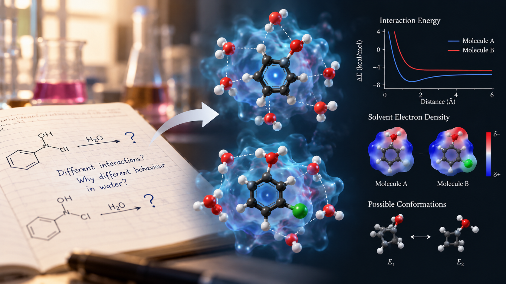
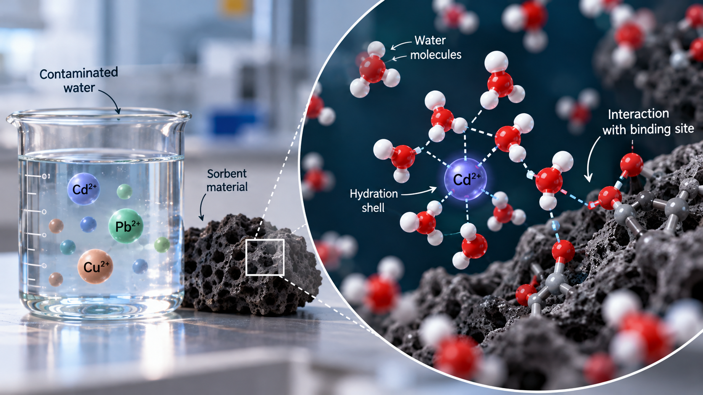

2026
ANALYTICAL METHODSTrace metal analysis
& method validation
Quantitative analysis of aqueous samples, with a focus on precision, recovery, and measurement uncertainty.
Spectroscopy · Calibration
I'm Ashneet, a chemistry postgraduate with a curiosity for the science behind materials, measurements, and the world around us.
Currently pursuing my M.Sc. Honours in Chemistry at the University of Hyderabad, I hold a B.Sc. Honours in Chemistry from Guru Ghasidas Vishwavidyalaya. My work brings together analytical chemistry, careful experimentation, and reliable scientific documentation.
Through laboratory training and a research internship at CSIR CIMFR, I've developed hands-on experience in sample preparation, UV–Vis spectroscopy, wet chemical analysis, and quantitative measurements.
University of Hyderabad · 2026–present
B.Sc. Honours Chemistry · GGV
Research internship · Summer 2025
Quantitative analysis of aqueous samples, with a focus on precision, recovery, and measurement uncertainty.
Investigating how aqueous conditions influence adsorption, selectivity, and sorbent regeneration.
Exploring the effects of pH, chloride concentration, temperature, and dissolved species on corrosion behaviour.
A foundation in chemistry, built through study and hands-on laboratory work.
IIT Bombay / NPTEL · Elite · 61%
University of Manchester / Coursera
Udemy
Contributing to an academic community through leadership, coordination, and scientific curiosity.
Guru Ghasidas Vishwavidyalaya
Leadership experience listed in the curriculum vitae.
Academic achievement
All India Rank
All India Rank
Writing on chemistry, learning, and life in the laboratory.

During my B.Sc. in Chemistry at Guru Ghasidas Vishwavidyalaya, laboratory work meant paying attention to what I could measure: a colour change, a reading, or the amount of a reagent. But a measurement leaves another question open. What is happening inside the molecule?
That is what interests me about computational chemistry. A structure drawn in a notebook is still. A computer model can help us explore its shape, compare possible arrangements, and ask how those differences might affect its behaviour.
As I continue studying chemistry at the University of Hyderabad, I would like to connect these molecular ideas with the experiments I know. Even a small question, such as why two similar molecules interact differently with water, feels like a useful place to begin.
I see learning computational chemistry as a way to ask more thoughtful questions before returning to the laboratory. The calculation becomes more interesting when there is an observation to explain.

My academic work on metal ion sorption has made water chemistry especially interesting to me. We can measure how much metal remains in a solution, but that number does not show every interaction taking place.
I would like to explore how computational chemistry could help with that missing picture. A simple model might let us compare possible ways a metal ion approaches a binding site on a sorbent. It could give us a starting point for thinking about why some interactions are more favourable than others.
The difficult part would be choosing a model that represents the question well. Water, the charge of an ion, and the surrounding chemical conditions all matter. A neat image on a screen would need careful interpretation.
My laboratory training has taught me to value repeat measurements and clear records. I would bring that same habit to calculations: write down the assumptions, check the method, and compare predictions with experimental results. That feels like a practical first step towards learning this field.